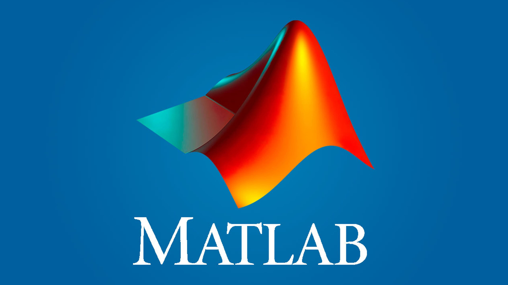
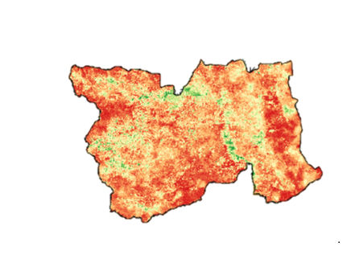
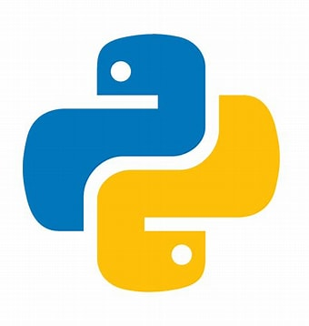
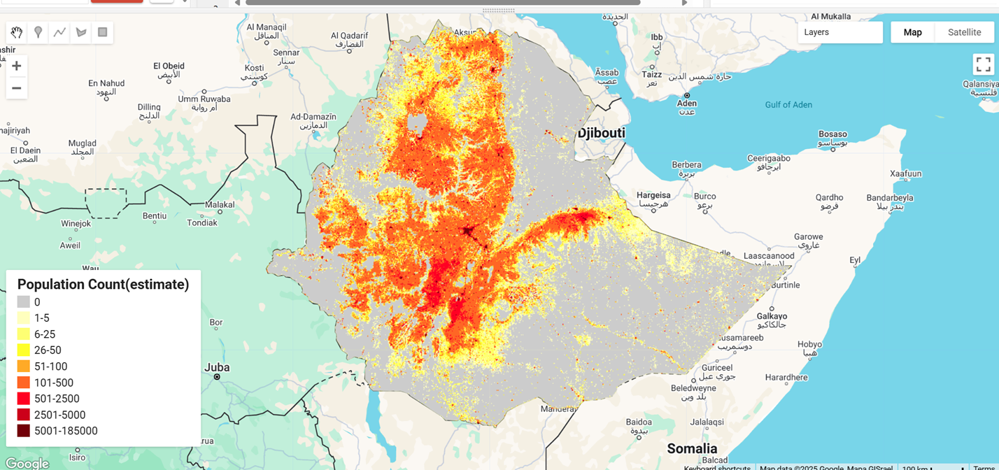
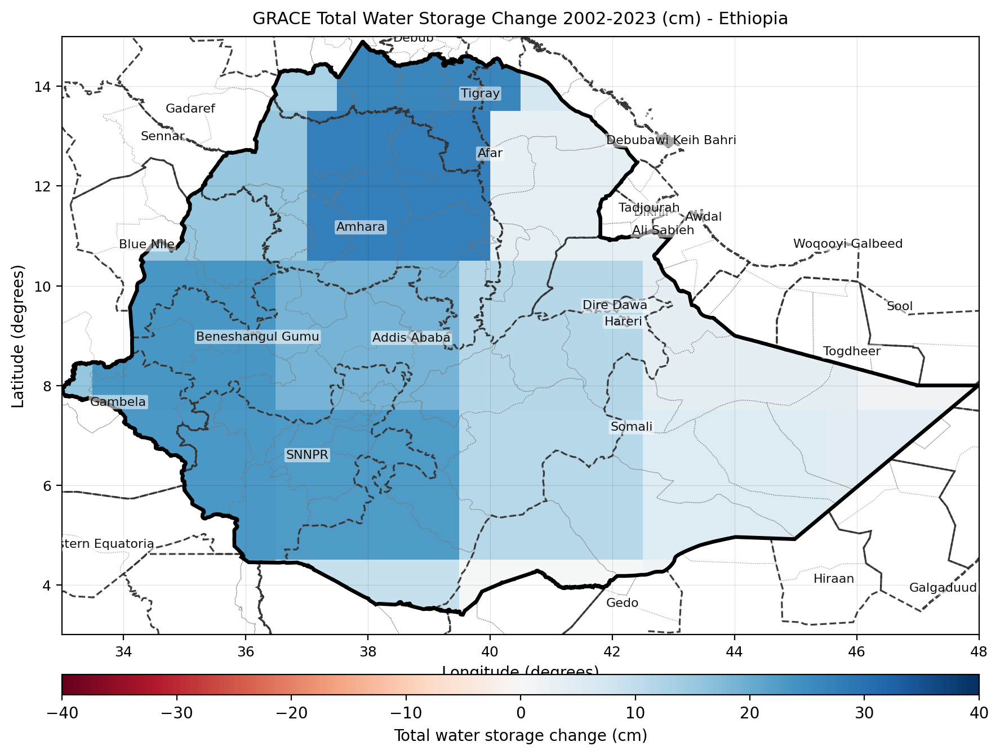
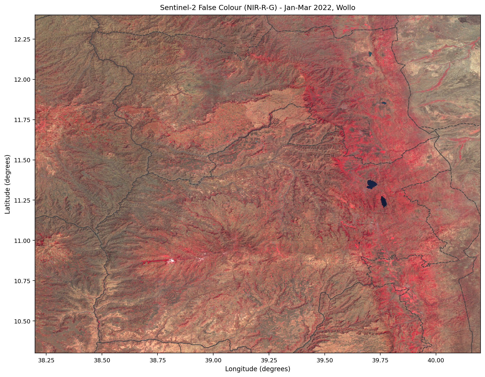

Free
7 modules
Introduction to Remote Sensing
Basics of remote sensing: principles, technologies, and applications. Perfect for beginners.
Browse the complete course catalog in a clean offline-friendly HTML library. Every course includes detailed lessons, practical exercises, knowledge checks, a capstone project, and a matching MkDocs document.
Open a course to view its full curriculum. Filter by category or search by title, topic, and module.
Basics of remote sensing: principles, technologies, and applications. Perfect for beginners.

Get started with MATLAB programming for scientific computing. Learn the fundamentals of the MATLAB environment, scripting, and data analysis in this free introductory course.
Master document preparation with LaTeX for academic and professional writing. Learn to create beautiful, structured documents with mathematical equations and scientific notation.

Free introductory module: explore the GEE platform, browse satellite catalogs, and run your first environmental analysis scripts.
Learn the fundamentals of GIS, including spatial data models, map projections, and basic analysis techniques using open-source tools.

Build interactive web maps using Leaflet, Mapbox, and other modern mapping libraries. This certificate course takes you from web fundamentals to deploying production-ready interactive maps and geospatial dashboards.

Learn how to create compelling, publication-ready geospatial visualizations using open-source tools. Covers thematic mapping, charting, interactive dashboards, and communicating spatial data effectively.
Analyze satellite imagery using Python. Covers NumPy, Pandas, Matplotlib, and real-world examples.
Master QGIS for data management, visualization, and spatial analysis. Ideal for practical learners.
Use Google Earth Engine for large-scale monitoring, land cover change, and climate analysis.

Apply machine learning to satellite data for classification, prediction, and anomaly detection.
Master the fundamentals of numerical analysis and learn to solve real-world problems using MATLAB. Ideal for students, engineers, and researchers seeking practical computational skills.
Learn geospatial data processing, mapping, and analysis using MATLAB. Ideal for those interested in scientific computing and spatial data visualization.
Go beyond the basics with advanced Python techniques for geospatial data processing, automation, and machine learning integration.
Understand how satellite data is used to monitor climate change indicators including deforestation, urbanization, and carbon emissions.

Master state-of-the-art deep learning architectures for semantic and instance segmentation of satellite and aerial imagery.

Apply GIS and remote sensing techniques to urban planning, infrastructure management, and smart city development.
Build AI and deep learning solutions for Earth observation: from classical machine learning to foundation models, segmentation, and deployment on maps and dashboards.
Master an open-source geospatial stack: GeoPandas, Shapely, rasterio, rioxarray, xarray, cartopy, and R's sf/terra for vector, raster, and climate data analysis.